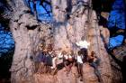
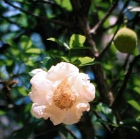
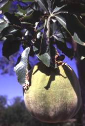
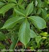

क्या आपने किसी ऐसे वृक्ष के बारे में सुना है या पढ़ा है जिसके तने में हजारों लीटर पानी भरा रहता हो? या जिसके तने में घर, दुकान, अस्पताल या अस्थायी जेल तक बनाई जाती हो? या जिसकी उम्र हजारों वर्ष हो? जी हाँ चित्रपहेली५में जो वृक्ष आपने देखा है उस वृक्ष में ये सारी विशेषतायें है। इतना ही नहीं इस वृक्ष की और भी हजारों विशेषतायें है। जिनमें से कुछ का वर्णन आगे किया जा रहा है।

इस वृक्ष का नाम है बेऑबॉब (Baobab) है इसे लेटिन भाषा में Adansonia Digitata और इसे The Monkey Bread Tree, The world Tree,The Cream of Tartar Tree, Lemonade Tree, Sour Gourd Tree के अलावा और भी कई नामों से पुकारा जाता है। अरबी भाषा में इसे “बु–हिबाब” कहा जाता है जिसका अर्थ है ” कई बीजों वाला पेड़“, शायद इसी बु–हिबाब शब्द का अपभ्रंश रूप है बेऑबॉब।
बेऑबॉब का अफ़्रीका के आर्थिक विकास में काफ़ी योगदान होने की वजह से अफ़्रीका ने इसे The world Tree की उपाधि भी दी है और संरक्षित वृक्ष के रूप में भी चुना है।अफ़्रीकामूल के मेडागास्कर और ऑस्ट्रेलिया में में पाये जाने वाले इस बेऑबॉब वृक्ष की सबसे पहली पहचान है इसका उल्टा दिखना यानि इसको देखने परआभास होताहै कि मानों पेड़ की जड़े ऊपर, और तना नीचे हो।
बेऑबॉब के इस रूप के बारे मेंकिवंदती है कि पहले यह पेड़ सीधा था परन्तु फ़लते-फ़ूलते इसने दूसरे पौधों और पेड़ों को मिलने वाले हवा और सूर्य प्रकाश को रोक दिया।परमात्मा को गुस्सा आया और उन्होने इस पेड़ को जड़ से उखाड़ कर उल्टा लगा दिया, बेऑबॉब के बहुत मिन्न्तें करने पर भगवान ने इस पेड़ को एक छूट दी कि साल के६महीने इस पर पत्ते लग सकते हैं बाकी के समय में यह पेड़ एक ठूंठ की भाँति दिखेगा। यह तो एक किवंदती है परन्तु आज भी इस पेड़ पर पत्ते सालमें सिर्फ़ ६महीने के लिये ही लगतेहैं, बाकी समय में यह एकदम सूखा दिखताहै।
इस पेड़ की दूसरी पहचान यह हैकि इसका तना४०/५०या १००से१२०फ़ुट तक चौड़ा होताहै। कहीं कहीं तो १८० फ़ूट तक पाया गया है। और यहीं से इस पेड़ का दूसराआश्चर्य शुरू होताहै, इस पेड़ के तने में हजारों लीटर (१,२०,००० लीटर तक) शुद्ध पानी भरा रहता है।बेऑबॉब का यह पानी जब वर्षा ना होती हो तब पीने के काम आता है।अफ़्रीका के कई कबीलों में इस पेड़ के नीचे पंचायतों की बैठकें होती है,विवादों का निबटारा किया जाता है और आदिवासी लोग इस पेड़ के नीचे अपना गुनाह भी कबूल करते है। पेड़ की साईज के बारे में कुछ जानकारी यहाँ भी मौजूद है
बेऑबॉबकी उम्र ६००० वर्ष तक ( कार्बन डेटिंग पद्दती से प्रमाणित) पाई गयी गई है।Island off Verde में दो पेड़ आज भी मौजूद हैं जिनकी उम्र ५००० से भी ज्यादा मानी जाती है।
हमने कहानियों में कल्प वृक्ष के बारे में पढ़ा सुना है और वर्तमान में नीम इसका श्रेष्ठ उदाहरण है जिसका प्रत्येक अंग का अपना उपयोग है इसी तरह बेऑबॉब के इतने सारे उपयोग है कि एक बड़ी सी किताब लिखी जा सकती है, यहाँ मैं उनके उपयोग संक्षिप्त में बताने की कोशिश करूंगा।
तने के कुछ उपयोग के बारे में तो मैने आपको उपर बताया ही है कि इस के तने में घर, दुकान, अस्पताल और अस्थायी जैल का काम भी लिया जाता है। अफ़्रीका के डर्बी शहर से १०० कि, मी दूर आज भी एक ऐसा पेड़ मौजूद है जिसको जेल के तौर पर काम में लिया जाता है।
बेऑबॉब की छाल में ४०% तक नमी होती है और इस वजह से यह जलाने के काम नहीं आती परन्तु तने की भीतरी छालफ़ाईबर जैसी होती है, से कागज, कपड़े, रस्सी, मछली पकड़ने के जाल, धागे, बास्केटऔर कंबल जैसी हजारों वस्तुएं बनाई जाती है।

बेऑबॉब के पेड़ पर पहली बार फ़ूल ( १२ सेमी तक लम्बे) पेड़ की २० वर्ष की आयु में अप्रेल मईमेंलगते है जो कि अल्पायु के लिये ही होते हैं और रात्रि में ही खिलते हैं।। फ़ूलों का रंग सफ़ेद एवं बडे़ बड़े होते हैं। पराग कणों से भी गोन्द बनाया जाता है।

फ़ल ककड़ी ( खीरा) की तरह और गूदेदार होते हैं और १ फ़ूट तक लंबे होते हैं( कई बार गोल भी होते हैं , जो बन्दरों को बहुत प्रिय होते है, और इसीवजह से इसे The monkey breadtree भी कहा जाता है। फ़लों से कई तरह की दवाईयाँ बनती है जो Filarae, रक्तक्षीणता, अरक्तता (Anaemia) , Rachities, Dysentry, दमा (Asthma), Rhumatism, (अतिसार)Diarrhoea जैसे रोगों को दूर करने के काम आती है। इस फ़ल को सुखाने के बाद पाऊडर बनाया जाता है और इसे पानी में मिलाने से बहुत ही नारियल के पानी सा परन्तु स्वाद में नींबू पानी सा खट्टास्वास्थयवर्धक ( एक संतरे से ६ गुना ज्यादा विटामिन “c” ) पेय बनता है। छोटे फ़लों की कई तरह की गेंद बनाई जाती है।
एकफ़ल में तकरीबन ३० बीज होते है।बीजों से भी कई तरह की दवाईयाँ, गोन्द, कच्चा तेल और तेल साबुन बनाने के काम में प्रयोग किया जाता है।

केल्शियम से भरपूरपत्तों सेसब्जीबनतीहै, उबाल कर डिटर्जेंट पाऊडर की तरह काम में लिया जाता है, पेट में गैस होने पर प्रयोग की जाने वाली दवाई बनती है।
यह सारे इस वृक्ष के बहुत थोड़े उपयोग है। ज्यादा जानकारी के लिये आप गूगल में Baobab टाईप कर परिणाम देखें।
भारत में यह पेड़ किस तरह पहुँचे कोई प्रमाण नही मिलते हैं। सूरत शहर के कतारगाम में अनाथआश्रम के सामने दो पेड़ और सरथाणा चुंगी नाका के सामने बने चिड़ियाघर में भालू के पिंजरे के पास एक पेड़ हजारों वर्षों से अड्डा जमाये हुए हैं। अगर कभी सूरत जाना हो तो यह पेड़ अवश्य देखना चाहिये। गुजराती में इसे ” गोरख आंबली (ईमली)” कहा जाता है।इसलिंकपरदियागयापेड़सुरतस्थितपेड़जैसादिखताहै।
एक अफ़सोस की बात और लिख दूँ कि सुरतमहानगर पालिका को इस पेड़ के बारे में कोई जानकारी नहीं है और यह पेड इतना महत्वपूर्ण है फ़िर भी सुरत के इस बओबॉब पेड़ को बिल्कुल भी महत्व नहीं मिल रहा है।